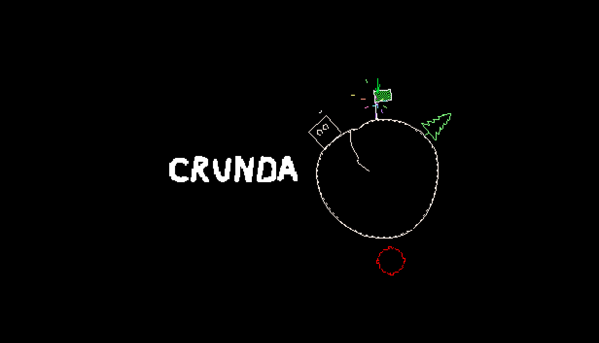
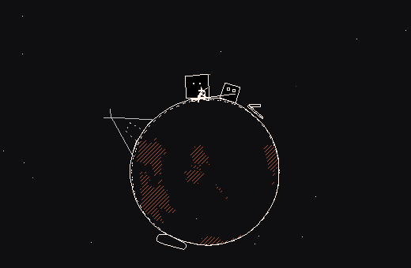
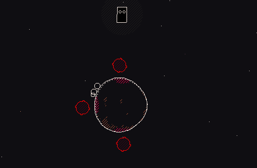
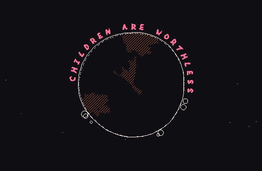
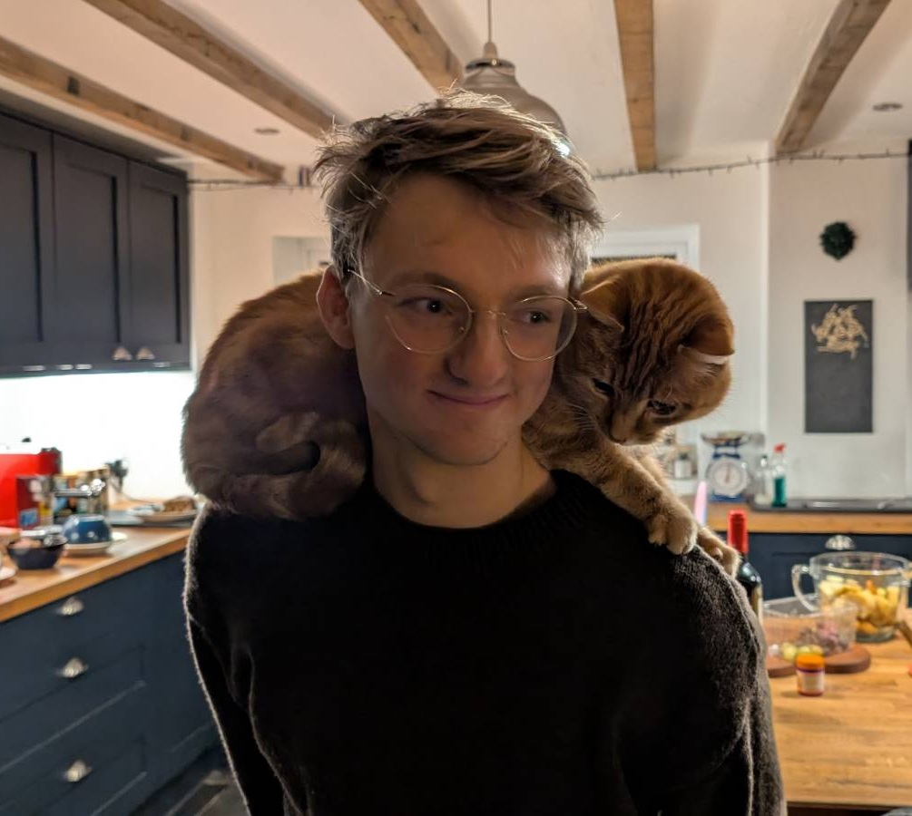
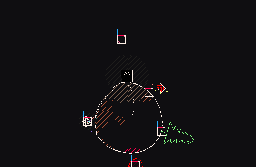
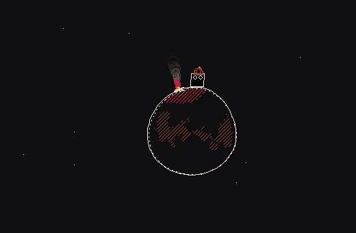

Soweli Digital · Crunda · Core Pitch Deck

A physics platformer where the player jumps between planets, every planet moves and wobbles and every landing causes a permanent impact.
- Developer
- Soweli Digital (Dan Slocombe, solo)
- Platforms
- PC (Primary) + Consoles (Secondary)
- Mode
- Single-player, with asynchronous leaderboards and sharable ghost racing
- Length
- 3–5 hours
- Price
- $12.99
- Status
- Engine, tools, terminal framing and Act 1's mechanics shipped in a public demo · ~12 of ~100 levels built
- Target
- PC Late 2027 / Early 2028 - sooner and multi-platform with a publisher
- Contact
- sowelidigitalltd@gmail.com
01 · Overview

Crunda is a physics platformer set in a dying asteroid belt, abandoned by humans and inherited by the robots they left behind. You play as an orphan jumping between rocks under simulated gravity. The player moves around each small asteroid in a circle, managing momentum to leap between them; every landing creates a persistent wobble on the asteroid's terrain, changing jumps that follow.
The player journeys from a scrap-strewn junkyard to an observatory built on the ruins of a human settlement, to a half-converted missionary ship and an orphanage with a sinister appetite.
With the orphan's own memory fading, they interpret the world through the human data they were trained on.
Speed is rewarded. Every level tracks your completion time, and advanced players can race ghosts of their past attempts for gold medals or a place on the global highscore table.

Intended Audience
The game is accessible to a wide age range and casual players but deep enough to interest core gamers with a taste for speedrunning.
Tone is comedic but dark at points, reminiscent of Roald Dahl.
Think Pikuniku if it had speedrun elements, or Celeste with worse puns and a little bit of Inscryption meta-narrative.

Crunda began as a Ludum Dare competition entry in 2021, winning first place in the "Fun" category and placing third overall of ~3,000 entries. Development restarted in 2024; the game was exhibited at Glasgow Independent Games Festival 2025, and in 2026 was selected as a Develop:Brighton Indie Showcase Finalist.
"It's rare that the simple act of jumping in a platformer is so much fun. Highly recommended."
— Alpha Beta Gamer, unsolicited demo coverage, March 2025
02 · Narrative

Moment to moment
- Orphan travels through space accidentally influencing events until fate guides it towards the orphanage it escaped. There it leads a chain of freed orphans back through a selection of levels it crossed alone, reinterpreting them. The combined impacts of the chain affect the asteroids and environment differently.
- The orphan, found drifting with no memory, expresses its character arc through a thought-bubble interpretation of the world. Trained on human data it goes from mistaking floating scrap for birds to fully understanding the world around it.
Wider World
- A colony of robots, abandoned by humanity, tries to understand its creators through errant signals:
- Gastronomer trying to discover new resources for humans that will never come, confusing terminology from food and astronomy.
- Monastery insistent on preserving the sanctity of "human traditions" as recorded in a ship's log rather than the "tainted" signals coming from Earth.
- Lawyers drawing up legal frameworks from offhand messages from Earth - the courts must rule on whether the sign-off “be nice to each other :)” is legally binding for all robots in the colony.
Framing and persistence
- The game is framed as a recovered robot terminal - a retro text-based operating system. Levels are the robot's memories, opened as files; each act is a constellation, each level a star.
- While the levels themselves are deterministic and reset perfectly, the system that contains them persists. Each level's "star" wobbles and mutates with the player's best time, a proxy for how much impact they made passing through.
- The more the player destabilises the constellation, the more shakes loose: "terminal fragments" - files of story and worldbuilding. Optional depth with the design target to feed the instability back into play. Within a level you deform the asteroids, across the game you deform the framing device.

03 · About Me
Soweli Digital is a one-man studio founded by Dan Slocombe.
I've been building small games for over 15 years and
work on projects featuring distorted graphics, thoughtful narrative and boundary-pushing interactivity.
Examples include:
- Road Toads, Frogger turned into a competitive couch co-op experience
- Blobpaint.net, an experimental blobby drawing platform
- Somnambulist, a thoughtful platformer where the protagonist's memories aid their journey

04 · Development
The engine, tools and core loop are complete and used to produce the demo which exercises the pipeline for the rest of the game.Already built:
- Custom engine with support for circular levels and wobble physics
- Ghost replay system, medal system and speedrunning mechanics
- Online leaderboards with ghost-verification system
- Visual system for planets, lighting and shaders
- In-engine level editor
- Mechanic-agnostic narrative script covering all four acts
- Outer terminal framing: constellation level-select and menu systems
- Three narrative systems: Dialogue, "Thought bubble", and "Terminal fragment"
The 12 level demo at Develop:Brighton typically took players 10–20 minutes at the stand, with newcomers slower while they found the controls, platformer veterans faster.
A 3–5 hour experience will require something on the order of ~100 levels; medals and ghost racing then extend playtime in a long tail for invested players.
Every level is built in the in-game editor making assembly and prototyping fast - a bespoke level using existing mechanics was built for the Brighton demo in under 30 minutes.
The real remaining work is each act's set of mechanics.
Each act has an intended feeling to communicate from the narrative script, and a set of candidate mechanics to deliver it. Which of them ship is found by experimentation and play - the same process that found the wobble and the mechanics of Act 1. The mechanics below are not necessarily final but an initial point to start working from, the timeline budgets for experimentation and finding what works best.
- Act 1 (exploration) - jumping between wobbling worlds, impacts that help or hinder later jumps, drifting helplessly in open space, spinning planets, soot that emerges and slows you - mechanics complete and shipped in the demo.
- Act 2 (tenderness - impacts turn constructive) - gas geysers that push instead of break; atmospheres that slow you or can't be survived; fragile asteroids that shatter if you land too hard; harvesters grazing the asteroids and hopping after gas bubbles, shy away from a nervous player, and barge an aggressive one.
- Act 3 (chaos at scale) - ice that strips away friction and doubles the pace, rain, hail and gusts of wind that bend every jump, geysers that turn explosive on impact. Crowds of unpredictable bystanders.
- Act 4 (return) - no new mechanics and no new levels built from scratch: the freed orphans follow the player back through existing levels, and the chain's combined impacts and new context reinterpret what's already there.
- Narrative content buildout: Gastronomer's observatory and characters, monastery and characters, "goldrush town" and orphanage setting and characters.
- Environment design and interior spaces.
- Playtesting / bugfixing, tuning content.

05 · Timeline
| Milestone | Current pace (part-time) | With a publisher (full-time) |
|---|---|---|
| Act 1 content complete | Nov 2026 | Nov 2026 |
| Act 2 content complete | Feb 2027 | Feb 2027 |
| Act 3 content complete | May 2027 | Apr 2027 |
| Content complete (Act 4) | Sep 2027 | Jun 2027 |
| PC release | Late 2027 / Early 2028 | Autumn 2027 |
| Switch / console | After PC release | At or near PC launch |
| Level editor + level sharing | Post-launch content update - file-based sharing | Post-launch content update - full online service (upload / browse / favourite), scoped together |
The columns converge until early 2027: signing plus up to three months' notice puts the start of full-time development there, so the acceleration shows from Act 3 onwards.

06 · Budget
Crunda is currently self-funded to PC release.
I am working part time alongside a full time job.
The remaining work is roughly six months of full-time development; at current part-time pace it spreads across the ~16 months shown in the timeline above.
Development is costed below at market rate for a senior game developer:
Cost to complete — PC release
| Line | Basis | Cost |
|---|---|---|
| Development | ~6 FTE-months @ ~£5.8k/mo (imputed, self-funded) | ~£35k |
| Music | contracted commission | £2–5k |
| Capsule / key art | contracted commission | £1–2k |
| Localisation | ~2 languages — selection guided by partner input; low word count (dialogue + terminal) | £3–5k |
| External QA pass | pre-launch | £2–4k |
| Tools & misc | ~£1k | |
| Contingency | ~15% | £6.5–8k |
| Total | ~£50–60k |
What changes with a publisher:
signing triggers the move to full-time - the same ~6 months of work happens back-to-back instead of spread part-time, moving the PC release from late 2027 / early 2028 to autumn 2027
- and the console version ships at or near PC launch rather than after it.
I am waiting for a strong signal to move to full time, and signing with you would be such a signal.
I have a notice period of up to 3 months, development would continue at the current pace during it, and I intend to cover the salary gap through personal funds.
To be direct: I go full-time on signing, with or without an advance. The advance's only role is to reduce my personal risk during the notice window.
The engine's platform layer is raylib, a thin, widely-ported C library, and everything above it is platform-agnostic with no unusual dependencies, meaning the console work is retargeting one layer rather than rewriting the game.
The port is not costed in the PC budget above - it would be scoped separately, as outsourced work or partner-side.
07 · Roster Fit & Ask
The Square Enix Collective's model, where the developer keeps control and rights, is exactly the partnership I'm looking for, and I believe Crunda fits the Collective roster - combining Circuit Superstars' replay depth with PowerWash Simulator's clip-friendly physics. The wobble reads in three seconds of footage and makes its own short-form content. The numbers in the Market Position doc come from research rather than marketing experience - putting them into practice is the first place I need your help.
The ask, in priority order:- Marketing & community support
- Expertise and guidance
- Console porting, certification & submission, platform relations
- Localisation, QA & accessibility
- An advance towards development costs - I would be leaving my full time job to focus solely on the game. The game ships without it but it reduces risk for me.